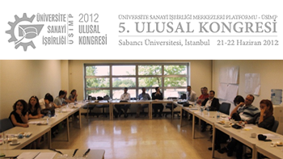

HABERLER

Üniversite sanayi işbirliği konusunda Türkiye’deki üniversite sanayi işbirliği merkezleri tarafından kurulan Üniversite Sanayi İşbirliği Merkezleri Platformu ÜSİMP in düzenlediği 2012 yılı 5. Ulusal Kongresi 21-22 Haziran tarihlerinde İstanbul Sabancı Üniversitesi'nde gerçekleştirilmiştir
daha fazla bilgi
Üniversite sanayi işbirliği konusunda Türkiye’deki üniversite sanayi işbirliği merkezleri tarafından kurulan Üniversite Sanayi İşbirliği Merkezleri Platformu ÜSİMP in düzenlediği 2012 yılı 5. Ulusal Kongresi 21-22 Haziran tarihlerinde İstanbul Sabancı Üniversitesi'nde gerçekleştirilmiştir
daha fazla bilgi
DUYURULAR

Enstitümüz tarafından desteklenmekte olan projeler kapsamında görev yapan,
proje alanında lisansüstü öğrenim görmekte olan veya doktora sonrası
araştırmacı olan proje personeline burs verilecektir...
daha fazla bilgi